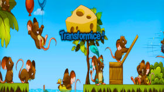
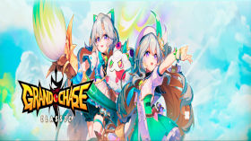
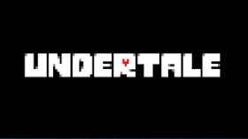
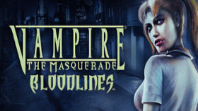
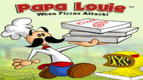

Transformice
Transformice é um jogo em plataforma MMO com dezenas de ratos correndo para levar o queijo de volta de volta para a toca. Esse jogo bombou no período de 2010 a 2015 e me diverti muito jogando!
Ano de Lançamento : 2010

Transformice é um jogo em plataforma MMO com dezenas de ratos correndo para levar o queijo de volta de volta para a toca. Esse jogo bombou no período de 2010 a 2015 e me diverti muito jogando!
Ano de Lançamento : 2010

Grand Chase é um jogo online de RPG de ação em plataforma gratuito com gráficos inspirados em anime, um dos jogos que guardo com carinho especial pois jogava ainda quando criança, em meados de 2009 quando tinha apenas 7 anos.
Ano de Lançamento: 2003

Undertale é um jogo RPG em um universo cheio de criaturas, onde você possui diversas escolhas para fazer e cada escolha leva a uma rota diferente, podendo ser uma rota do bem ou do mau. A imersão e trilha sonora desse jogo é de outro mundo e me deixou muito surpreso!
Ano de Lançamento: 2015

Vampire: The Masquerade Bloodline é um jogo RPG tradicional com gráficos bem trabalhados nas expressões dos personagens, contendo perigo e combate brutal de um jogo de ação em primeira pessoa. Um jogo inesquecível com uma história muito envolvente e que deixa você intrigado a cada escolha!
Ano de Lançamento: 2004

Papa Louie When Pizzas Attack! é um jogo de plataforma onde você está em uma aventura para salvar os clientes de Papa Louie do Infamous Onion Ring. Joguei muito durante a infância na escola, muito nostálgico!
Ano de Lançamento: 2006
